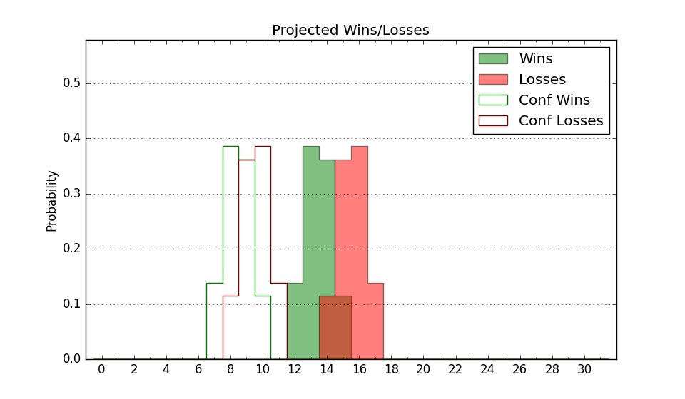

| Home | Game Probabilities | Conferences | Preseason Predictions | Odds Charts | NCAA Tournament |
| City: | San Marcos, Texas | |
| Conference: | Sun Belt (7th)
| |
| Record: | 7-8 (Conf) 12-14 (Overall) | |
| Ratings: | Comp.: -3.3 (197th) Net: -3.2 (197th) Off: 107.7 (142nd) Def: 111.0 (264th) SoR: 0.0 (123rd) |
| Remaining | ||||||
|---|---|---|---|---|---|---|
| Date | Opponent | Win Prob | Pred. | |||
| 2/22 | South Alabama (131) | 50.3% | W 67-66 | |||
| 2/25 | Troy (105) | 41.7% | L 68-70 | |||
| 2/28 | James Madison (143) | 53.3% | W 72-71 | |||
| Previous | Game Score | |||||
| Date | Opponent | Win Prob | Result | Off | Def | Net |
| 11/4 | Eastern Michigan (307) | 83.8% | W 64-44 | -15.3 | 38.1 | 22.8 |
| 11/12 | @TCU (78) | 10.8% | L 71-76 | 3.2 | 6.7 | 9.9 |
| 11/16 | @Abilene Christian (230) | 41.0% | L 60-72 | -11.0 | 1.2 | -9.8 |
| 11/21 | (N) Bradley (88) | 22.6% | L 68-82 | -9.6 | -4.9 | -14.5 |
| 11/22 | (N) Princeton (176) | 44.2% | W 83-80 | 15.0 | -9.3 | 5.7 |
| 11/24 | (N) Ohio (183) | 46.5% | W 74-65 | 5.4 | 10.2 | 15.6 |
| 12/1 | @Texas Southern (298) | 58.3% | W 72-59 | 5.1 | 10.5 | 15.6 |
| 12/8 | Rice (175) | 59.3% | W 75-66 | 11.5 | -3.8 | 7.7 |
| 12/14 | @Florida Atlantic (102) | 16.8% | L 80-89 | 12.6 | -7.3 | 5.2 |
| 12/21 | Georgia Southern (265) | 77.9% | W 83-61 | 6.0 | 12.7 | 18.6 |
| 12/29 | UT Arlington (206) | 66.5% | L 72-80 | -8.1 | -9.7 | -17.8 |
| 1/2 | @Marshall (195) | 34.7% | L 71-77 | 4.8 | -6.1 | -1.4 |
| 1/4 | @Appalachian St. (139) | 24.3% | L 61-72 | -2.5 | -7.0 | -9.5 |
| 1/9 | @Troy (105) | 17.4% | W 74-73 | 7.8 | 1.9 | 9.7 |
| 1/11 | @Southern Miss (288) | 56.7% | L 88-92 | -2.7 | -1.4 | -4.1 |
| 1/15 | Georgia St. (264) | 77.0% | W 94-80 | 11.4 | -3.9 | 7.5 |
| 1/18 | Southern Miss (288) | 81.7% | W 85-82 | -10.3 | -2.9 | -13.2 |
| 1/23 | @Louisiana Lafayette (322) | 64.6% | W 89-74 | 20.6 | 3.1 | 23.8 |
| 1/25 | @Arkansas St. (98) | 15.3% | L 65-80 | -5.9 | -1.1 | -7.1 |
| 1/30 | Louisiana Lafayette (322) | 86.1% | L 61-70 | -21.0 | -8.8 | -29.7 |
| 2/1 | Arkansas St. (98) | 38.2% | L 74-85 | 4.1 | -15.1 | -11.0 |
| 2/5 | @Old Dominion (332) | 68.3% | L 64-75 | -7.2 | -16.5 | -23.8 |
| 2/8 | @Central Michigan (215) | 38.4% | L 70-85 | -8.0 | -12.6 | -20.7 |
| 2/13 | @Louisiana Monroe (345) | 74.1% | W 72-60 | -5.8 | 14.4 | 8.6 |
| 2/15 | @South Alabama (131) | 22.9% | L 65-70 | -3.1 | 7.1 | 4.0 |
| 2/19 | Louisiana Monroe (345) | 90.7% | W 80-63 | 8.6 | 2.9 | 11.6 |
| Stats & Trends | |||||
|---|---|---|---|---|---|
| Current | Day | Week | Month | Season | |
| Composite | -3.3 | -0.0 | +0.5 | -2.6 | +1.6 |
| Comp Rank | 197 | -- | +11 | -29 | +3 |
| Net Efficiency | -3.2 | -0.0 | +0.5 | -3.0 | -- |
| Net Rank | 197 | -- | +9 | -32 | -- |
| Off Efficiency | 107.7 | -0.0 | +0.1 | -1.3 | -- |
| Off Rank | 142 | -1 | -3 | -24 | -- |
| Def Efficiency | 111.0 | -0.0 | +0.4 | -1.7 | -- |
| Def Rank | 264 | -1 | +9 | -16 | -- |
| SoS Rank | 240 | -3 | -10 | -23 | -- |
| Exp. Wins | 13.5 | +0.0 | -0.1 | -2.9 | +1.1 |
| Exp. Conf Wins | 8.5 | +0.0 | -0.1 | -2.9 | -0.2 |
| Conf Champ Prob | 0.0 | -- | -- | -2.8 | -5.4 |

| Advanced Stats | ||
|---|---|---|
| Stat | Value | Rank |
| Off Eff FG % | 0.499 | 205 |
| Off Ast Ratio | 0.145 | 179 |
| Off ORB% | 0.324 | 85 |
| Off TO Rate | 0.150 | 194 |
| Off FT Ratio | 0.337 | 160 |
| Def Eff FG % | 0.522 | 211 |
| Def Ast Ratio | 0.148 | 187 |
| Def ORB% | 0.290 | 205 |
| Def TO Rate | 0.138 | 254 |
| Def FT Ratio | 0.426 | 341 |